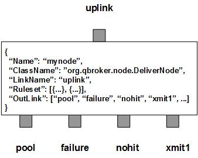

DeliverNode listens to an input XQ for JMS messages with an arbitray URI as their destinations. For each incoming message, DeliverNode looks up its URI in the local cache for any XQueue as the transmit queue established for the destination. If there is an XQueue in the cache for the destination, DeliverNode just puts the incoming message to the XQueue as the delivery. Otherwise, DeliverNode will generate a request with the URI and a newly created XQueue for the destination. The request will be sent to the outlink connected to a PersisterPool for a new persister thread. Once the persister is instantiated, DeliverNode will collect the response from the PersisterPool. The response is supposed to contain the persister thread for delivering the messages to the specific destination. DeliverNode caches the thread and the id of the XQueue using the URI as the key. Therefore, DeliverNode is able to deliver JMS messages to arbitrary destinations based to their URIs and the predefined rulesets on-demand.
It has two types of outlinks, position-fixed and non-fixed. There are three position-fixed outlinks: pool for all requests to the PersisterPool, failure for the messages failed in the delivery process, nohit for those messages not covered by any rulesets. The non-fixed outlinks are tranmit queues for the on-demand destinations.
DeliverNode also contains a number of predefined rulesets. These rulesets categorize messages into non-overlapping groups. Therefore, each rule defines a unique message group. The ruleset also specifies the way to construct URI and properties for the new Persisters. For those messages falling off all defined rulesets, DeliverNode always creates an extra ruleset, nohit, to handle them. Therefore all the nohit messages will be routed to nohit outlink. The downstream node at nohit is supposed to handle all nohit messages.
URI is used to identify destinations. In order to construct the URI for an arbitrary destination, each ruleset contains two sets of format operations. The first one is the list of templates with the name of URITemplate. The other is the list of substitutions with the name of URISubstitution. URITemplate appends the previous non-empty text to URI and sets the next initial text for its corresponding URISubstitutions to modify. The associations between the URITemplates and URISubstitutions are based on their positions. Either URITemplate or URISubstitution can be null for no action and a place holder. Therefore, you can insert multiple null URITemplates so that the associated URISubstitutions will be able to modify the same text in turns. If any of the operations fails, the message will be routed to failure outlink. Besides the URI, a ruleset may contain the default propertes under DefaultProperty for the new destination.
For each new destination, DeliverNode creates an Object message as the request containing the URI and the XQueue, as well as the default properties provided they are defined. The request is sent to the PersisterPool via the pool outlink. Then DeliverNode frequently checks the response for each outstanding requests. The response is supposed to have the status and the persister thread for the new destination. DeliverNode will use the thread to monitor its status. If the response does not have the thread, DeliverNode will route the messages to the failure outlink and remove the XQueue and the URI from the cache. The samething will happen if the request for a new persister times out. MaxRetry is used to control when to timeout the request to the pool. It also controls the timeout on a dead persister thread.
DeliverNode also maintains an active set of XQueues as the transmit queues for all destinations. Behind each XQueue, there is at least one persister thread delivering the messages to the destinations. The messages may be stuck in the XQueue until they are delivered, as long as the persister is not stopped. However, if there is no message in the queue, DeliverNode will mark it idle. All the transmit queues are monitored frequently in every heartbeat. If one of them has been idle for over MaxIdleTime, its queue will be stopped. Its persister thread and the transmit queue will be removed from the cache.
You are free to choose any names for the three fixed outlinks. But DeliverNode always assumes the first outlink for pool, the second for failure and the third for nohit. The name for nohit is allowed to be overlapped with that of failure. But neither nohit nor failure is allowed to share their names with the pool. The rest of the outlinks are for on-demand destinations.
Apart from the common properties, there are three implementation specific properties for DeliverNode.
| Property Name | Data Type | Requirement | Description | Examples |
|---|---|---|---|---|
| Heartbeat | integer | optional | interval in sec to check outstanding requests | 30 (default: 60) |
| MaxNumberPersister | integer | optional | max number of persisters | 32 (default: 256) |
| MaxRetry | integer | optional | max number of retries | 2 |
The delivery operation is executed via the pre-defined rulesets. Therefore, the configuration of the rulesets is critical to the operations of DeliverNode. Here are complete properties of rulesets for DeliverNode.
| Property Name | Data Type | Requirement | Description | Examples |
|---|---|---|---|---|
| Name | alphanumeric with no spaces | mandatory | name of the ruleset | event |
| MaxIdleTime | integer | optional | max number of seconds of idle state | 900 |
| Capacity | integer | optional | max number of connections | 8 |
| MaxRetry | integer | optional | max number of retries | 2 |
| URITemplate | list | optional | list of templates for new persisters | see example |
| URISubstitution | list | optional | list of subsctitutions for new persisters | see example |
| DefaultProperty | map | optional | default property map for new persisters | see example |
| PreferredOutLink | alphanumeric with no spaces | mandatory for bypass only | name of the preferred outlink | bypass |
| JMSPropertyGroup | list | optional | list of pattern groups on properties to select messages | see example |
| XJMSPropertyGroup | list | optional | list of pattern groups on properties to exclude messages | see example |
| PatternGroup | list | optional | list of pattern groups on body to select messages | see example |
| XPatternGroup | list | optional | list of pattern groups on body to exclude messages | see example |
| StringProperty | map | optional | for setting the user properties on the messages | see example |
Here is an example of DeliverNode:
{
"Name": "node_deliver",
"ClassName": "org.qbroker.node.DeliverNode",
"Description": "test",
"Operation": "deliver",
"LinkName": "deliver",
"Capacity": "256",
"MaxNumberPersister": "512",
"Heartbeat": "60",
"MaxRetry": "2",
"DisplayMask": "0",
"XAMode": "1",
"Debug": "25",
"Ruleset": [{
"Name": "tcp",
"Capacity": "32",
"XAMode": "1",
"MaxIdleTime": "1800",
"JMSPropertyGroup": [{
"asset": "^[^:]*$",
"uri": "^tcp://"
}],
"URITemplate": ["##uri##/?Operation=request"]
},{
"Name": "agent",
"Capacity": "32",
"XAMode": "1",
"MaxIdleTime": "1800",
"JMSPropertyGroup": [{
"short_name": "^Agent$",
"asset": "^[^:]*$"
}],
"URITemplate": ["tcp://##asset##:6627", "/?Operation=request"]
},{
"Name": "flow",
"Capacity": "32",
"XAMode": "1",
"MaxIdleTime": "1800",
"JMSPropertyGroup": [{
"short_name": "^Flow$",
"asset": "^[^:]*$"
}],
"URITemplate": ["tcp://##asset##:7227", "/?Operation=request"]
},{
"Name": "console",
"Capacity": "32",
"XAMode": "1",
"MaxIdleTime": "1800",
"JMSPropertyGroup": [{
"short_name": "^Console$",
"asset": "^[^:]*$"
}],
"URITemplate": ["tcp://##asset##:8228", "/?Operation=request"]
},{
"Name": "wmq_q",
"Capacity": "32",
"XAMode": "1",
"MaxIdleTime": "1800",
"JMSPropertyGroup": [{
"HostName": "^.+$",
"QueueName": "^.+$"
}],
"URITemplate": [
"wmq://##HostName##",
":##port##",
"/?QueueName=##QueueName##",
"&Operation=put"
],
"URISubstitution": [
"s/^wmq:\\/\\/$//",
"s/^:$//",
"s/^QueueName=$//"
]
},{
"Name": "wmq_t",
"Capacity": "32",
"XAMode": "1",
"MaxIdleTime": "1800",
"JMSPropertyGroup": [{
"HostName": "^.+$",
"TopicName": "^.+$"
}],
"URITemplate": [
"wmq://##HostName##",
":##port##",
"/?TopicName=##TopicName##",
"&Operation=pub"
],
"URISubstitution": [
"s/^wmq:\\/\\/$//",
"s/^:$//",
"s/^TopicName=$//"
]
}],
"OutLink": ["pool", {
"Name": "failure",
"Capacity": "48",
"Partition": "16,4"
},{
"Name": "nohit",
"Capacity": "32",
"Partition": "16,4"
}]
}